地政学
ジョグジャカルタは特別州の中心で、スルタンの王宮と共和国の行政が同じ都市に重なる。独立戦争期の首都経験、ジャワ内陸交通、空港と鉄道、火山リスクが、文化都市を政治的にも重要な場所にしている。今も要地だ。

🇮🇩 インドネシア / アジア / World City Atlas
王宮、大学、バティック、ガムラン、火山麓の集落、ボロブドゥールとプランバナンへ向かう旅が重なる、ジャワ文化の生活都市です。
都市の骨格
ジョグジャカルタはクラトンを中心に、マリオボロ通り、大学地区、職人街、鉄道駅、空港アクセス、農村、メラピ山麓が近い距離でつながります。観光地でありながら、学生、職人、商人、農家が日常を組み立てる都市です。
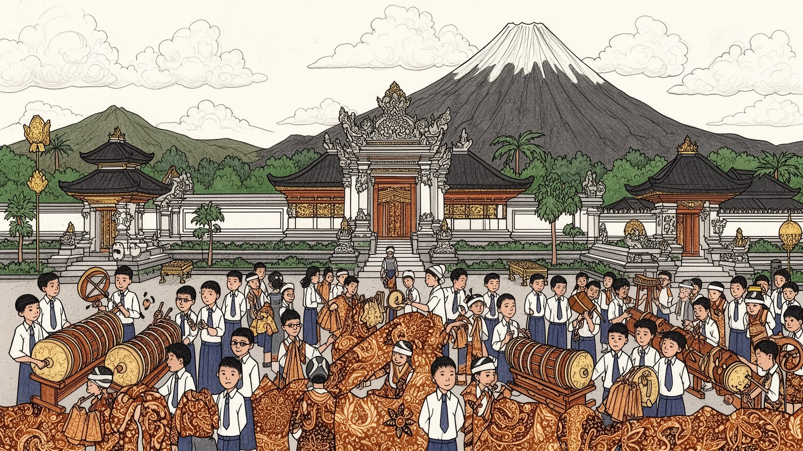
ジョグジャカルタは特別州の中心で、スルタンの王宮と共和国の行政が同じ都市に重なる。独立戦争期の首都経験、ジャワ内陸交通、空港と鉄道、火山リスクが、文化都市を政治的にも重要な場所にしている。今も要地だ。
大学、宿泊、飲食、ガイド、バティック、銀細工、出版、農業、行政が雇用を作る。学生の消費と安い生活費は街を支えるが、観光労働や小規模工房には季節差、低賃金、家族労働の負担も残る。技能継承も課題だ。今も。
王宮儀礼、ガムラン、ワヤン、バティック、モスクの祈り、教会、寺院遺産が近い距離で続く。文化は観光演目である前に、家族行事、職人の仕事、学校教育、地域の暦として日々の作法を形づくる。深い記憶を運ぶ街だ。
王宮、マリオボロ、タマン・サリ、遺跡ツアー、火山麓、食堂を巡れる一方、住民には渋滞、家賃上昇、ごみ、洪水、観光客との距離が課題になる。下宿、屋台、市場、モスクが学生都市の日常を支える。安心も課題だ。
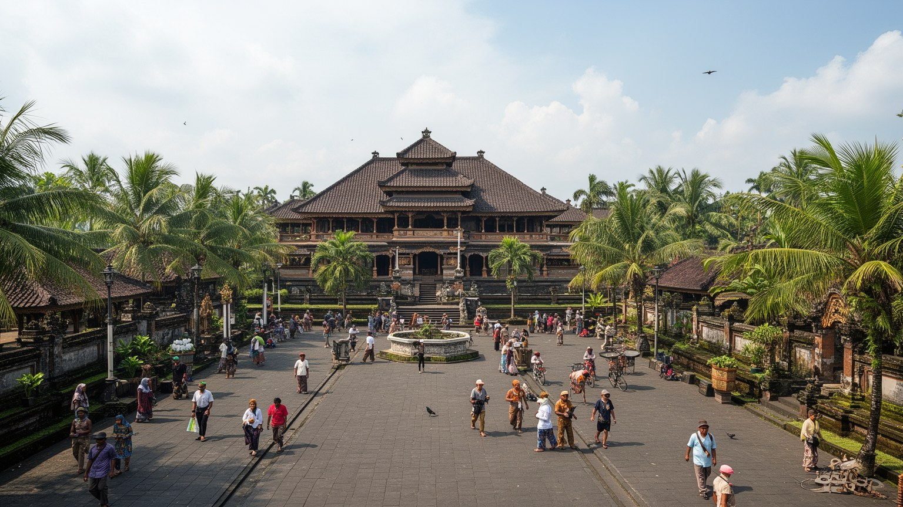
ジョグジャカルタを理解する入口は、クラトンと呼ばれる王宮が今も都市の中心にあることです。王宮、北広場、南広場、マリオボロ通り、鉄道駅、タマン・サリ、職人街は、単なる観光名所の集まりではなく、ジャワの宇宙観、政治、商業、日常の動線が重なった都市構造を作っています。スルタンの権威は博物館の中に閉じておらず、特別州の政治、儀礼、土地、文化政策に関わり続けます。王宮周辺では、馬車、屋台、土産物店、学校、住宅、モスクが近接し、古い都市軸が現代の交通と観光に使い直されています。マリオボロは歩行者と買い物客でにぎわう通りですが、背後の路地には住民の生活、宿泊業、配送、清掃、祈りの時間が流れます。王宮都市としてのジョグジャカルタは、過去を保存するだけの場所ではありません。伝統的な中心が現在の行政、教育、観光、商業を受け止め、都市の方向感覚を作る場所です。観光客が見やすい正面の景色だけでなく、王宮を支える職人、儀礼の準備、警備、交通整理、近隣の店の働きを見ると、都市の中心が生活によって保たれていることが分かります。王宮軸は、ジョグジャカルタの記憶と日常を結ぶ背骨です。さらに王宮周辺の土地利用は、近代的な所有や再開発だけでは説明しにくい層を持ちます。権威、慣習、商売、住民の生活が折り合うことで、古都の中心は観光の舞台ではなく、今も交渉が続く都市空間になっています。
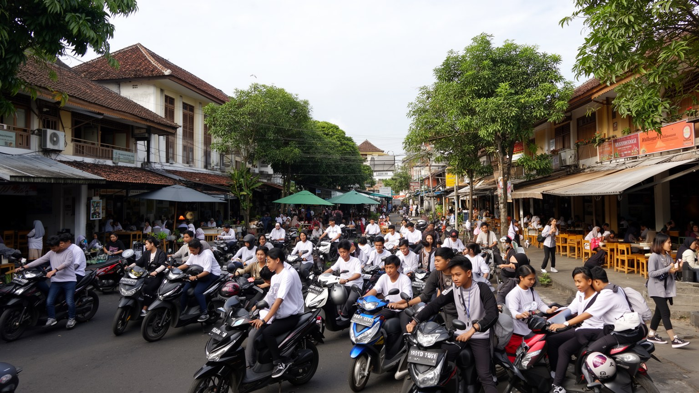
ジョグジャカルタはインドネシアを代表する学生都市として知られます。ガジャ・マダ大学をはじめ、多くの大学、専門学校、語学学校、寮、下宿、コピー店、食堂、カフェ、バイク修理店が都市の北部から周辺地区へ広がっています。学生は地方から集まり、安い食事、下宿、宗教活動、サークル、アルバイト、政治討論を通じて街を使います。学生人口は出版、飲食、住宅、交通、医療、デジタルサービスの需要を生み、都市を若く保つ一方、家賃上昇や交通混雑も招きます。大学は研究機関であるだけでなく、全国の若者がジャワ文化と都市生活を学び、卒業後に各地へ戻る社会的な通過点でもあります。下宿の小さな部屋、屋台の定食、深夜の課題、金曜礼拝、試験期の印刷店は、学生都市の具体的な風景です。学費や生活費の負担は家庭の経済状況を映し、奨学金やアルバイトの有無が学びの余裕を左右します。学生の政治参加も重要で、街頭の議論や集会は国家の課題を地方都市から可視化してきました。ジョグジャカルタの知の経済は、大学の看板だけでなく、若者が安く学び、食べ、住み、語り合える日常の基盤によって成り立っています。近年はカフェや共同作業空間も増え、デザイン、映像、情報技術、小規模起業へ進む学生もいます。若い消費が街を活気づける一方、長く住む家族には静けさや家賃の変化が負担になることもあります。
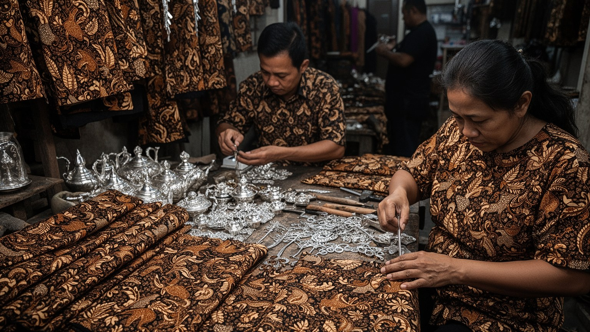
ジョグジャカルタのバティックは、布の模様だけでなく、王宮文化、商業、家族労働、観光、教育を結ぶ産業です。手描きの蝋防染、型押し、染め、裁断、販売には多くの工程があり、工房、家庭、学校、土産物店、ギャラリーがその流れを支えます。模様には哲学や儀礼の意味が込められ、婚礼や公式行事で使われる一方、現代的な服や雑貨としても売られます。コタゲデの銀細工、革細工、木工、陶器、影絵人形の制作も、同じように観光商品であり、地域の技能でもあります。手仕事の価値は完成品の美しさだけではなく、技術を学ぶ時間、材料の調達、価格交渉、販売先の変化に表れます。安価な大量生産品や輸入品が増えると、手仕事の手間は見えにくくなり、職人の収入が不安定になります。観光客が工房を訪れることは、技術を知る入口になりますが、写真や短い体験だけで終われば、労働の重さまでは伝わりません。ジョグジャカルタの工芸は、伝統の保存ではなく、毎日の収入と誇りを生む現代産業です。若い職人がデザイン、オンライン販売、観光案内を組み合わせられるかが、技能継承の鍵になります。工房では女性や家族の細かな作業が大きな役割を持ち、賃金の低さや健康への負担も見過ごせません。布を選ぶことは、都市に残る手仕事の時間をどう評価するかという問いでもあります。市場の値札にも、その判断が表れます。
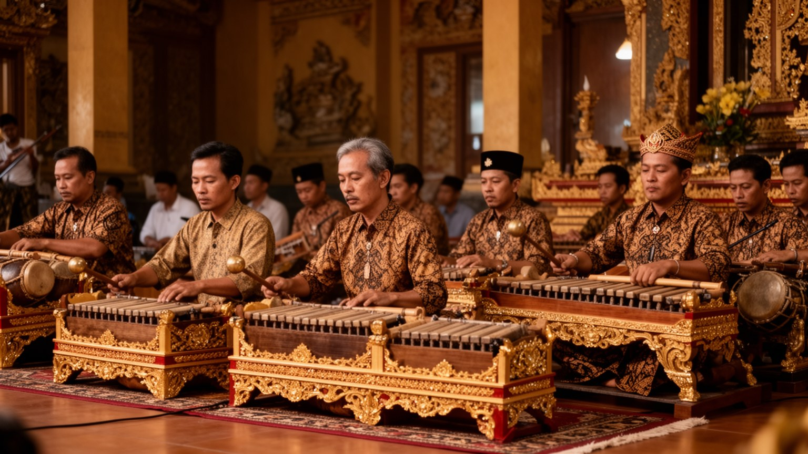
ジョグジャカルタの文化を語るとき、ガムラン、ワヤン、舞踊、詩、宮廷儀礼は欠かせません。青銅の響き、影絵人形の語り、ゆっくりした身振りは、観光客向けの公演で見られるだけでなく、王宮、学校、地域行事、宗教的な節目にも関わります。ガムランの稽古は、楽器を正確に鳴らす訓練であると同時に、周囲の音を聞き、間を共有し、集団で時間を合わせる学びです。ワヤンの物語には神話、道徳、政治風刺、家族の葛藤が重なり、古い形式の中で現在の社会を語る力があります。舞台文化は華やかに見えますが、衣装、楽器管理、指導者、稽古場、夜の移動、観客集め、出演料という現実的な条件に支えられます。大学や芸術学校は若い表現者を育て、伝統を固定せずに新しい音楽や現代舞踊とつなげています。文化を守るとは、演目名を保存することではなく、学ぶ場所、発表する場所、演じる人が生活できる条件を残すことです。ジョグジャカルタでは、王宮文化と学生の実験精神が近くにあり、その近さが古典と新作を同じ都市時間の中で響かせています。公演の短い美しさの背後には、長い稽古、家族の理解、楽器を保管する場所、夜道を帰る安全が必要です。観光客の拍手だけでなく、地域の子どもが次の演奏者になる循環が文化を生きたものにします。音の継承は、毎週の練習と近所の支えから始まります。
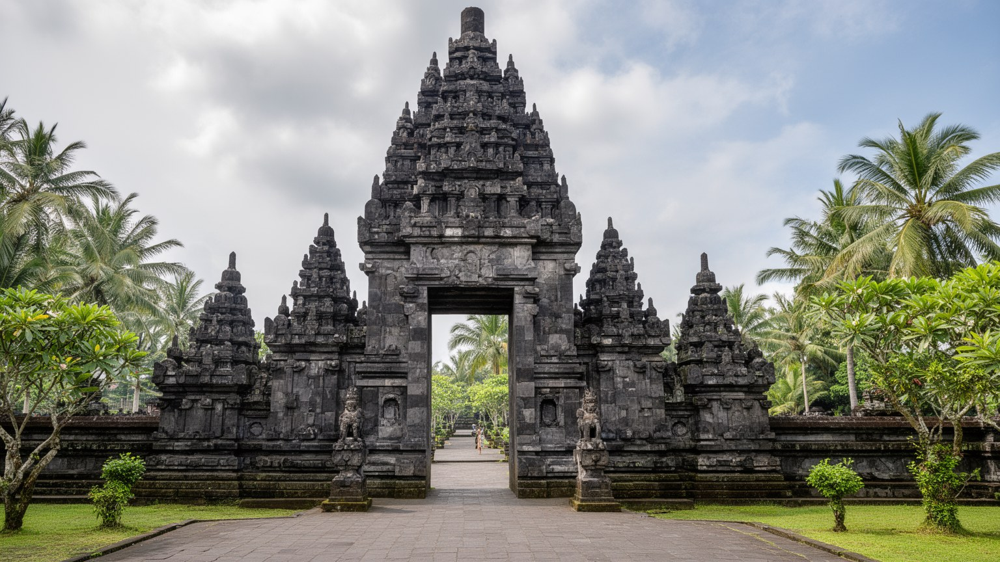
ジョグジャカルタは、ボロブドゥールとプランバナンへ向かう旅の玄関口でもあります。ボロブドゥールは中部ジャワに位置する仏教遺跡で、プランバナンはヒンドゥー寺院群として知られ、どちらもジャワの宗教史と王権の記憶を伝えます。多くの旅行者はジョグジャカルタに宿泊し、朝の出発、ガイド、車両、入場券、食事、土産物店を組み合わせて遺跡を巡ります。遺跡観光はホテルや旅行会社だけでなく、運転手、通訳、写真家、飲食店、清掃、警備、周辺村落の小商いを支えます。一方で、訪問者が増えるほど、遺跡の保存、入場管理、交通、宗教的な敬意、地域への還元が課題になります。遺跡は壮大な石の建築であると同時に、現在の住民が暮らす地域の中にあります。ジョグジャカルタを拠点に遺跡を訪れるなら、名所を短時間で消費するだけでなく、古代の宗教、植民地期の発掘、独立後の保存、現代の観光労働が一つの道筋でつながることを意識したい都市です。王宮文化、イスラムの日常、仏教とヒンドゥーの遺産が近距離にあることで、ジャワの歴史は単線ではなく重層的に見えてきます。遺跡へ向かう道の途中にも、田畑、学校、店、村の祈りがあります。世界的な文化遺産を訪ねる旅は、石造建築だけでなく、それを囲む現在の生活を尊重して初めて深い経験になります。移動の時間も、都市と農村の関係を読む手がかりになります。
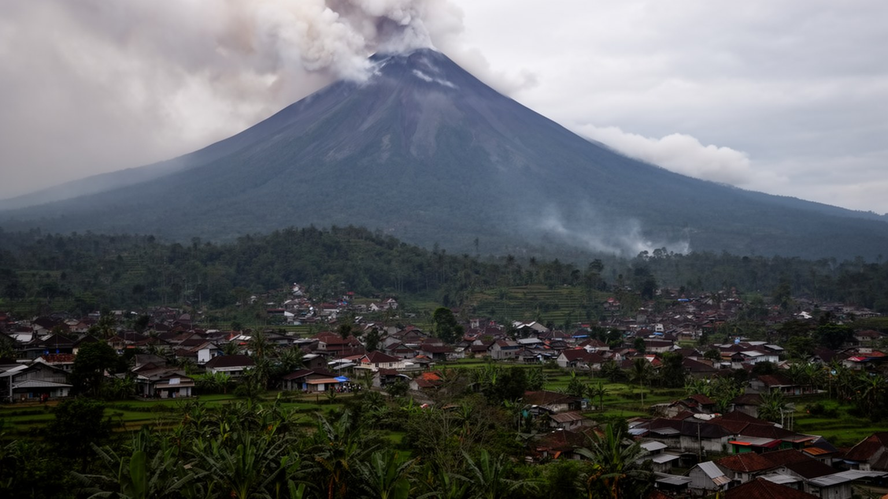
ジョグジャカルタの北には、インドネシアでも活動的な火山の一つであるメラピ山があります。火山は景観や観光の背景であるだけでなく、噴火、火砕流、降灰、土石流、避難、農地への影響を通じて都市と周辺村落の暮らしを左右します。山麓では肥沃な土が農業を支え、砂や石材は建設資源にもなりますが、雨季には火山灰と土砂が川を下り、橋や道路、住宅へ危険をもたらします。行政、大学、火山監視機関、地域組織は警戒情報、避難訓練、ハザードマップ、避難所運営を積み重ねてきました。災害対応は技術だけではなく、家畜をどう避難させるか、高齢者へ誰が知らせるか、観光客にどの言語で伝えるか、学校をいつ閉じるかという具体的な判断の連続です。火山観光は山の力を身近に感じさせますが、危険を娯楽化しすぎれば地域の不安を軽く見てしまいます。ジョグジャカルタの生活は、王宮や大学の都市性と、火山麓の自然リスクが同じ平野にあることで成り立っています。メラピ山は脅威であると同時に、水、土、信仰、記憶をもたらす存在であり、都市の時間感覚を深く決めています。噴火後の清掃、農地の回復、観光再開、学校の再開は、災害から生活へ戻る長い過程です。火山と共に暮らす知恵は、行政の計画だけでなく、村の経験と家族の判断にも支えられています。備えは、観光都市の信頼にも直結します。
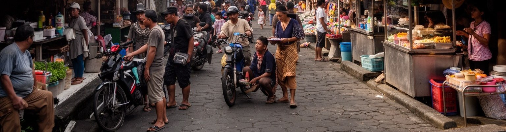
ジョグジャカルタの観光は、王宮、マリオボロ、遺跡、火山、工房、食文化を結ぶ多層的な産業です。旅行者の目にはホテル、カフェ、土産物店、ガイド付きツアーが見えますが、その背後には運転手、清掃、洗濯、屋台、荷物運び、バティック販売、通訳、舞台スタッフ、警備、オンライン予約への対応があります。観光労働は若者や女性、地方から来た人に収入の機会を作りますが、繁忙期と閑散期の差が大きく、歩合制や家族労働も少なくありません。マリオボロのにぎわいは、夜遅くまで働く人、早朝に仕入れる人、歩道を整える人によって支えられています。観光客が増えるほど、店の家賃、道路の混雑、ごみ、騒音、地域の物価も変わります。都市にとって重要なのは、訪問者数を増やすことだけではなく、観光の利益が工房、近隣商店、交通労働者、文化の担い手へ届くことです。旅の快適さは無料で生まれるわけではありません。誰が長時間立ち、誰が交渉し、誰が言語を学び、誰が片付けるのかを見れば、観光都市の実像が分かります。ジョグジャカルタの魅力は人のもてなしに支えられるからこそ、その労働の安定が都市の将来を左右します。短期滞在者向けの店が増えると、住民向けの価格や雰囲気も変わります。観光を生活と両立させるには、稼ぐ場所と暮らす場所を同時に守る視点が必要です。
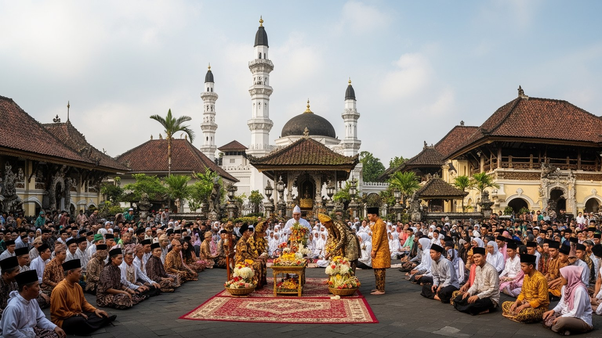
ジョグジャカルタの日常には、イスラムの祈り、王宮儀礼、祖先の記憶、学校行事、家族の祝いが重なっています。モスクのアザーンは生活の時間を区切り、ラマダンやレバランは帰省、商売、食卓、交通を大きく動かします。一方で、王宮に関わる儀礼や行列、ガムラン、供物、暦の感覚は、ジャワ的な世界観を都市空間に残します。近郊にはヒンドゥーと仏教の遺跡もあり、信仰の現在と歴史の層が近い距離で見えます。宗教は観光の装飾ではなく、服装、食、学校、結婚、葬送、商店の営業時間、地域の助け合いに関わる生活制度です。学生や移住者が多い都市では、出身地の違い、宗派、世代、政治的な考え方も交差します。信仰は連帯を作る一方で、少数派や自由な表現をめぐる緊張を生むこともあります。ジョグジャカルタの宗教生活を読むには、寺院遺跡の壮大さだけでなく、近所のモスク、下宿の食卓、王宮前の行列、家族の儀礼を同じ都市の日常として見る必要があります。祈りは街を止めるものではなく、人が時間を共有し、地域の関係を確かめる方法です。その柔らかな規律が、学生都市と王宮都市を結びます。多くの若者が暮らすため、信仰の作法は学び直され、出身地ごとの習慣も持ち込まれます。寛容さは自然に生まれるのではなく、学校、下宿、近所、商店での小さな調整によって保たれています。
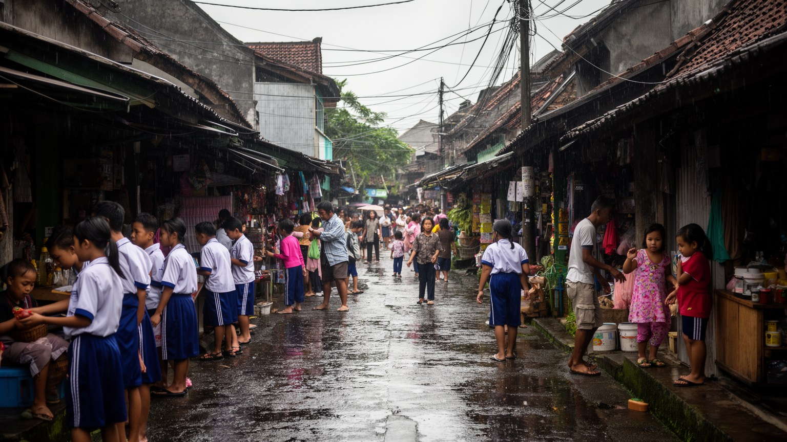
ジョグジャカルタは暮らしやすい学生都市として語られます。安い食堂、下宿、屋台、市場、バイク移動、温かな近所づきあいは、若者や旅行者にとって大きな魅力です。グドゥッの甘い味、夜のレセハン、伝統市場の菓子、早朝の野菜売りは、下宿生、職人、運転手、家族の毎日の食事でもあります。しかし住民の日常には、渋滞、交通事故、住宅費の上昇、ごみ処理、水はけ、洪水、観光地周辺の騒音、短期滞在者向け開発の圧力もあります。バイクは移動の自由を与える一方、歩行者や高齢者にとって道路を使いにくくします。学生向けの下宿やカフェが増える地区では、地元の家族が住み続ける費用や静けさが変わります。都市の経済が観光と教育に支えられるほど、外から来る人を歓迎する力と、住民の生活を守る制度の両方が必要になります。ごみの分別、排水、公共交通、歩道、緑地、住宅の手頃さは、派手な名所よりも生活の質を左右します。ジョグジャカルタの日常は、古都らしい落ち着きと、急速に変わる消費文化が同居する場所です。街の魅力を守るには、安さや親しみやすさを消費するだけでなく、それを支える店主、大家、清掃員、学生、職人、近隣住民の負担を見なければなりません。暮らしやすさは自然に残るものではなく、毎日の小さな調整で保たれています。小さな市場や屋台が残ることも、その調整の一部です。
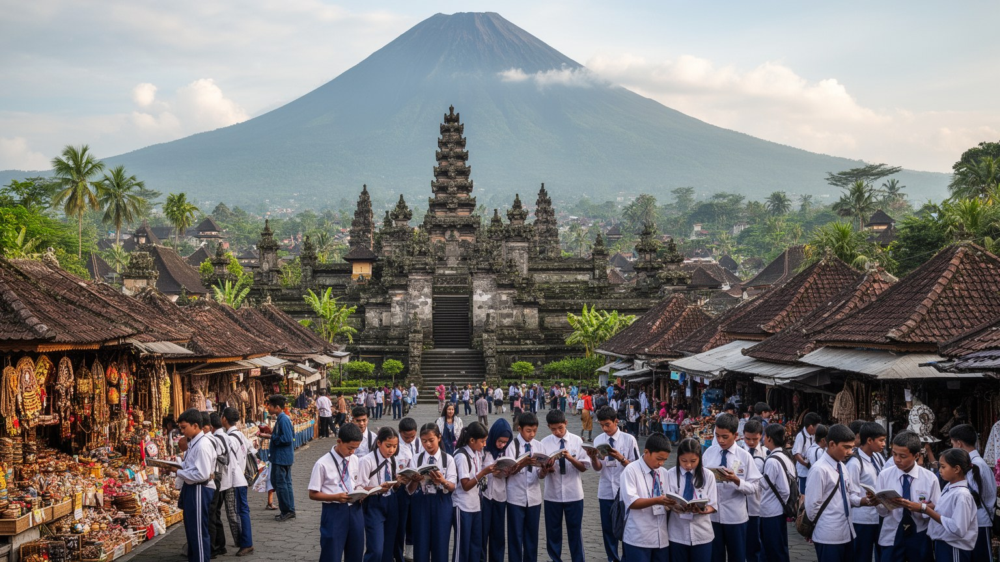
ジョグジャカルタは、大都市の規模で目立つ場所ではありません。それでも重要なのは、王宮文化、学生都市、工芸、宗教、遺跡観光、火山リスク、安い日常が、非常に近い距離で重なっているからです。クラトンは過去の象徴であると同時に、現代の政治と文化政策に関わる中心であり、大学は全国の若者を受け入れて都市を絶えず更新します。バティックやガムランは観光資源である前に、職人と演者の労働、家族の儀礼、教育の場に支えられます。ボロブドゥールとプランバナンへの旅は、古代の宗教史を見せるだけでなく、現代のガイド、運転手、店主、保存政策を動かします。メラピ山は美しい背景であると同時に、避難と防災を求める現実の力です。ジョグジャカルタを読むとは、穏やかな古都という印象の奥に、若者の移動、観光労働、都市問題、信仰の時間、地域の負担を見ることです。規模の小ささは弱さではなく、文化、教育、生活、リスクが互いに見える距離にあるという特徴です。この都市の価値は、名所を短く巡る速度ではなく、王宮前の朝、学生街の夜、工房の手元、火山麓の備えを一つの生活圏として理解できる点にあります。古都としての落ち着きは、何も変わらないことではなく、多くの来訪者と学生を受け入れながら、生活の基盤を壊しすぎない調整の力です。その均衡を保てるかが、ジョグジャカルタの次の課題になります。